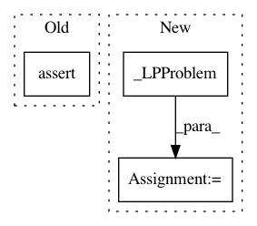

f1e6577b856fa088ad1af728d8387d1932658ce4,scipy/optimize/tests/test__linprog_clean_inputs.py,,test_non_finite_errors,#,206
Before Change
bounds=bounds)
assert_raises(ValueError, _clean_inputs, c=c, A_ub=A_ub, b_ub=b_ub, A_eq=[
[1, 2], [1, -np.inf]], b_eq=b_eq, bounds=bounds)
assert_raises(
ValueError,
_clean_inputs,
c=c,
A_ub=A_ub,
b_ub=b_ub,
A_eq=A_eq,
b_eq=[
1,
np.nan],
bounds=bounds)
def test__clean_inputs1():
c = [1, 2]
After Change
def test_non_finite_errors():
lp = _LPProblem(
c=[1, 2],
A_ub=np.array([[1, 1], [2, 2]]),
b_ub=np.array([1, 1]),
A_eq=np.array([[1, 1], [2, 2]]),
b_eq=np.array([1, 1]),
bounds=[(0, 1)]
)
assert_raises (ValueError, _clean_inputs, lp._replace(c=[0, None]))
assert_raises (ValueError, _clean_inputs, lp._replace(c=[np.inf, 0]))
assert_raises (ValueError, _clean_inputs, lp._replace(c=[0, -np.inf]))
assert_raises (ValueError, _clean_inputs, lp._replace(c=[np.nan, 0]))
In pattern: SUPERPATTERN
Frequency: 5
Non-data size: 3
Instances
Project Name: scipy/scipy
Commit Name: f1e6577b856fa088ad1af728d8387d1932658ce4
Time: 2019-08-13
Author: chelsea.liu@datadoghq.com
File Name: scipy/optimize/tests/test__linprog_clean_inputs.py
Class Name:
Method Name: test_non_finite_errors
Project Name: scipy/scipy
Commit Name: 0fbce92e3ecf2dae1c4819d4c970724184d12d41
Time: 2019-10-27
Author: chelsea.liu@datadoghq.com
File Name: scipy/optimize/tests/test__linprog_clean_inputs.py
Class Name:
Method Name: test_non_finite_errors
Project Name: scipy/scipy
Commit Name: 0fbce92e3ecf2dae1c4819d4c970724184d12d41
Time: 2019-10-27
Author: chelsea.liu@datadoghq.com
File Name: scipy/optimize/tests/test__linprog_clean_inputs.py
Class Name:
Method Name: test_type_errors
Project Name: scipy/scipy
Commit Name: fc85c265d3f79a0011c7b988ac2cbd25d757550a
Time: 2020-03-15
Author: j.m.vleeshouwers@tue.nl
File Name: scipy/optimize/tests/test__linprog_clean_inputs.py
Class Name:
Method Name: test_bad_bounds
Project Name: scipy/scipy
Commit Name: f1e6577b856fa088ad1af728d8387d1932658ce4
Time: 2019-08-13
Author: chelsea.liu@datadoghq.com
File Name: scipy/optimize/tests/test__linprog_clean_inputs.py
Class Name:
Method Name: test_type_errors